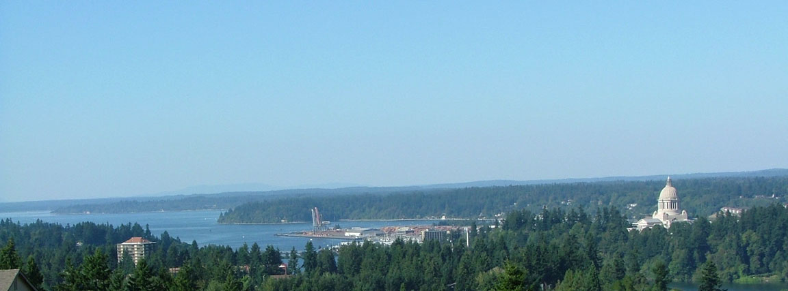

About the Capital City
| Population | The population in the capital as of 2023 is 55,605.[2a] |
|---|---|
| Year Incorporated | Olympia was incorporated as a town on January 28, 1859. It became a city in 1882.[2b] |
| Region | Olympia anchors the South Puget Sound region of Western Washington.Wikipedia: Olympia, Washington |
| Classification | Olympia is classified as urban ranked 182nd in the United-States.[2c] |
| Average Income Level | Average household income in Olympia is $76,930 a year.[3] |

[2d]